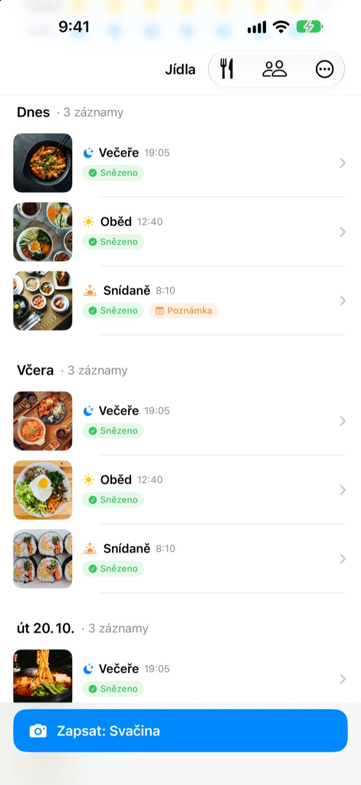
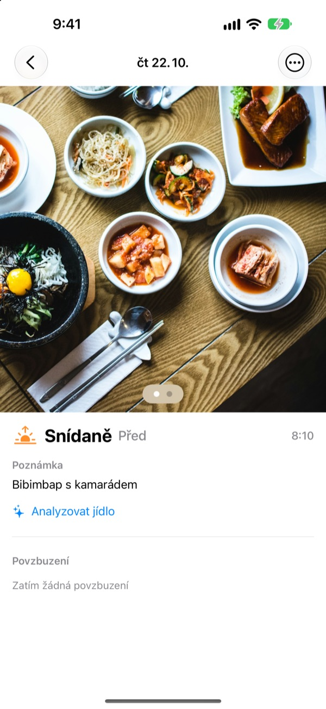
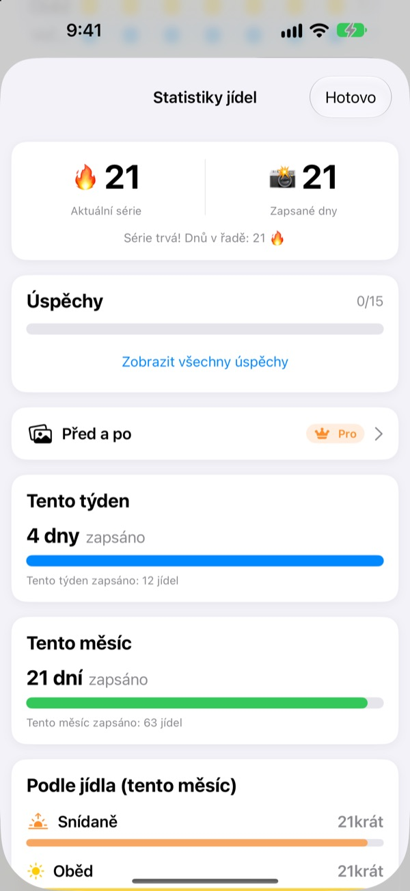
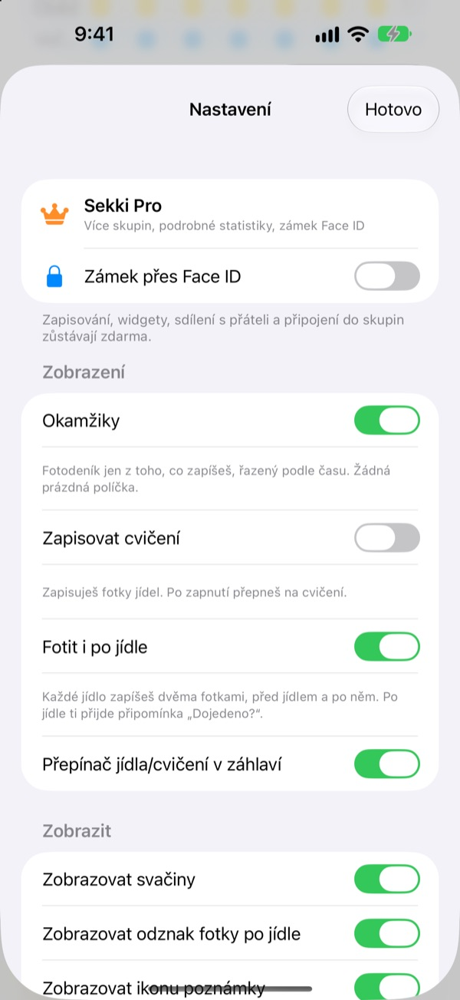

Jedna fotka před jídlem.
A je zapsáno.
Sekki se podívá, kdy jste fotili, a zařadí fotku k snídani, obědu, večeři nebo svačině. Stačí zapsat jedno jídlo denně a série běží dál.
Zápisy, statistiky, widgety i sdílení s přáteli jsou zdarma.

Vyzkoušejte si to
Zvolte čas a klepněte na tlačítko zápisu. Stejně jako v aplikaci už tlačítko ukazuje jídlo pro tu dobu.
Vzdali jste deník jídla po třech dnech?
Jednou vynecháte snídani, zapomenete na večeři a prázdná políčka začnou otravovat, dokud aplikaci nesmažete. Sekki prázdná políčka nemá. Hromadí se jen zapsaná jídla v pořadí a jediná fotka stačí, aby se den počítal.
Vyfoťte a jídlo je zařazené
Podle času pořízení zařadí Sekki fotku k snídani, obědu, večeři nebo svačině. Přidejte fotky před a po jídle, zapište bez fotky nebo napište poznámku.
Jídlo se rozpozná zdarma přímo v zařízení a fotky nikdy neopustí telefon.

Záznam, který nikdy neubývá
Jedno jídlo denně udrží sérii a celkový počet zapsaných dní nikdy neklesne. Týdenní a měsíční statistiky ukazují, kolik dní a jídel jste zapsali, ne procento splnění.
Cestou sbíráte úspěchy jako Série 7 dní nebo Ranní ptáče.

Jen jídla, která chcete, bez otevírání aplikace
Vyberte, na která jídla chcete připomínky, a nastavte časy podle svého dne. Po fotce před jídlem označíte Snězeno přímo z oznámení.
Zapisujte i tlačítkem Akce, přes Siri, Zkratky nebo widget a přidávejte přátele kódem, abyste se povzbuzovali emoji a komentáři.

Začnete ve třech krocích
- 1
Vyberte jídla
Při prvním spuštění se Sekki zeptá, na která jídla upozorňovat. Změníte to v Nastavení.
- 2
Fotka před jídlem
Tlačítko zápisu už ukazuje jídlo pro aktuální čas. Klepnout, vyfotit, hotovo.
- 3
Dojedeno? Klepněte
Klepněte na Snězeno v oznámení nebo widgetu, nebo přidejte fotku po jídle.
Zapisování bez otevírání aplikace
- Oznámení
- Po fotce před jídlem označte Snězeno přímo z upozornění
- Widget na ploše
- Dnešní počet zápisů a právě probíhající jídlo, plus tlačítko Snězeno
- Widgety na zamčené obrazovce
- Obdélníkový, kruhový a v řádku
- Tlačítko Akce · Siri · Zkratky
- Snězeno jedním stiskem nebo jednou větou
- Ukládání do Fotek
- Zapněte v Nastavení a jídla i cvičení se uloží do samostatných alb Sekki
- Režim cvičení
- Cvičení se ukládá odděleně od jídel a počet tréninků za měsíc vidíte hned
Tlačítko Snězeno ve widgetu vyžaduje iOS 17 nebo novější.
Zápisy jsou zdarma. Sekki Pro jde hlouběji.
Zdarma
- Zápisy s fotkou a automatickým zařazením, fotky před a po, poznámky
- Série, celkový počet dní, týdenní a měsíční statistiky, úspěchy
- Připomínky vybraných jídel a Snězeno bez otevírání aplikace
- Widgety, tlačítko Akce, Siri a Zkratky
- Sdílení jídel a cvičení s přáteli, emoji a komentáře
- Vytvořit jednu skupinu, přidat se k libovolnému počtu dalších
- Rozpoznávání jídla v zařízení
Sekki Pro
- Více skupin pro rodinu, práci nebo partu z posilovny
- Porovnání jídel z doby před pár týdny a dnes vedle sebe
- Jídla, která jíte nejčastěji
- Zamčení aplikace pomocí Face ID nebo Touch ID
Roční nebo měsíční předplatné, nebo jednorázový doživotní nákup
Předplatné se automaticky obnovuje, pokud ho nezrušíte alespoň 24 hodin před koncem období. Zrušit ho můžete kdykoli v Nastavení > Apple účet > Předplatná. Podmínky služby: m1zz.github.io/RoutineCamera/cs/terms.html
Časté dotazy
Kde jsou uložené moje fotky?
Ve vašem zařízení. Když v Nastavení zapnete Automaticky ukládat do Fotek, uloží se i do alb Sekki ve Fotkách. Dokud je zapnuté Sdílet moje jídla (na začátku je zapnuté), nahrávají se na iCloud, aby je viděli přidaní přátelé. Vypnout to můžete v Nastavení > Účet a sdílení.
Jak přidám přátele?
Na obrazovce Přátelé sdílejte svůj šestimístný kód a zadejte kód přítele. Více kódů můžete vložit najednou, oddělené čárkou.
Jak povzbudím přítele?
Otevřete jídlo přítele a nechte emoji nebo krátký komentář. Pokud ještě nic nezapsal, klepněte na prázdné políčko a jemně ho šťouchněte.
Přeruší se série, když vynechám jídlo?
Ne. Zapište ten den jakékoli jídlo, i svačinu, a série pokračuje. I když vynecháte celý den, celkový počet zapsaných dní neklesne.
Nechodí mi oznámení.
Zkontrolujte v Nastavení iOS > Oznámení, že má Sekki oznámení povolená a že je zařízení přihlášené k iCloudu. Časy připomínek změníte v nastavení aplikace.
Posílá rozpoznávání jídla fotky na server?
Ne. Probíhá v zařízení, takže fotky nikdy neopustí telefon. Zdarma a bez omezení.
Jak smažu účet a data?
V Přátelé > Účet > Smazat účet. Účet i data o jídlech na serveru se smažou a nelze je obnovit. Když něco nepůjde, napište nám.
Jak zruším předplatné?
V Nastavení > Apple účet > Předplatná. Obnovuje se automaticky, pokud ho nezrušíte alespoň 24 hodin před koncem období. Doživotní nákup se platí jednou.
Chyby, nápady a dotazy k účtu pište na leeo@kakao.com nebo do DM na Instagramu @lee25_ios. Obvykle odpovídáme do jednoho až dvou dnů.